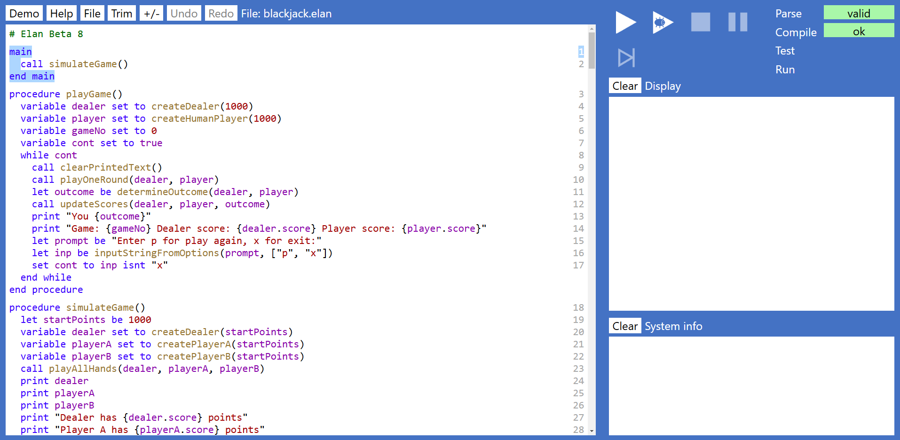

Blackjack
In this exercise you will:
- Play a few hands of the card-game Blackjack (also known as 'twenty-one') learning:
- How to load, run, and stop an existing Elan program.
- The rules of Blackjack and how it is played and some of the important terminology such as 'draw', 'stand', 'bust', 'soft-ace', and 'dealer face card'.
- Explore the code for the ready-made Elan Blackjack program, learning:
- How to navigate (move around) the code in the program.
- That a program is made up from instructions.
- How one instruction may be made up from a sequence of other instructions.
- How to recognise a few common instructions, and what they do.
- Make small modifications to the program, learning:
- How to edit an existing instruction, include the difference between the 'templated' parts of an instruction,
which you cannot modify, and the 'fields' within an instruction which you can modify.
- How to ensure that any changes/additions that you make are saved to a file, so that you can retrieve them again.
- The program development cycle: write, run, test, refine.
- Write new code to create fully-automated Blackjack players that implement different strategies, learning:
- How to implement two different, but minimal automated player strategies.
- How to run a single simulated hand of Blackjack for the Dealer, and both your automated players.
- How to run the same simulation 10,000 times and compare how each player, and the Dealer, have scored (known as 'looping' or 'iteration')
- How to add a 'decision' into a strategy, by using a 'condition' or 'selection'.
- How to refine an automated player's decision to make proper use of a 'soft-ace'.
- How to determine whether the dealer's face card makes a difference, by analysing how often the Dealer goes bust from different face cards.
- How to refine the player's strategy to make best use of this information.
Play a few hands of Blackjack using a ready-made Elan program
Before you start this exercise, your teacher should have advised you:
- Where to access Elan (it might be via the public web, or locally from a school server).
- Where you can access the ready made Blackjack program.
Load and Run the program
From the Elan page, select File then Load and use the file-selector dialog to find the file Blackjack.elan.
Your screen should then look something like this (the text might be slightly different due to version changes):

Note:
- The System info pane at the bottom-right should be empty. If it contains an error message at this stage it
means that the program was not loaded successfully and you will need to ask your teacher for help.
- The large pane on the left hand side of the screen is the 'code editor'
- it shows the instructions (also often called the 'code') that makes up the program.
You will be learning how to read, modify and extend this code in later sections.
But you don't need to be able to understand any of it to run and use the Blackjack program.
- At the top right you can see the status bar, which should show that the Parse status is 'valid',
and that the Compile status is 'ok'. Both have a green background, to reinforce the message that this
is the desired status. (If you have difficulty seeing the colours referred to, ask your teacher,
who can set up a different colour profile for you, both for the Elan tool, and for this documentation).
Assuming everything is as described above you will now be able to run the program. Click on the Run button - the triangular icon shown
at the top of the screen.
(Note that the button next to it looks similar but with a 'bug' inside it. You will learn about how to use that later.
If you pressed this button it would also run the program, but it may run slower because it is having to do more work. So always
run with the plain Run button until you understand how and when to use Debug.)
Upon running notice that:
- The code editor now has a tint, indicating that it is 'disabled': you can not alter it while the program is running.
- The Run button is disabled, but the Stop button is enabled. You can stop the program at any point, and run it again from the start.
- The Display pane will now contain some information generated by the program something like the following - though since the game uses a shuffled deck
the actual card values will differ each run.

Playing Blackjack
In the program you are the only player, playing against the dealer. Each of you has been dealt an initial 'hand' of two cards.
You can see both of your own cards and you can also see one of the dealer's two cards, known as the dealer's 'face card'.
Alongside your hand you can see the total value of the hand.
Note:
- Number cards (two to ten) have their obvious value.
- Royal cards (Jack, Queen, King) each has the value of 10.
- If your hand includes an Ace, this will initially be valued at 11.
- The program is offering you the option to 'stand' (take no more cards) or to 'draw' (be dealt another card). The pale blue bar
indicates that it is expecting you to type a response - either s or d.
- Your aim is to get the total value of the hand as close to 21 as you dare.
However, if you draw a card and that card takes the total value over 21 then your hand will be 'bust' and you cannot continue.
The exception is that if your hand has an Ace valued at 11, it will automatically be de-valued to 1, so you will not then be bust.
- At each point that you are asked whether you want to stand or draw, you must weigh up the risks of going bust, against
the risk of standing, but with the dealer ending up closer to 21 than you.
- If your total hand value is exactly 21 you will not be offered the option to draw.
- If your total hand value is exactly 21 from only two cards you hold a 'Blackjack' hand, which is even better in terms
of the final outcome than having a total of 21 from more than two cards.
- In this implementation of the game, there is no limit to the number of cards you can draw up to a total of 21. (Also,
if you happen to have played Blackjack before, this version does not offer the options offered by some versions
to 'split' a hand, to 'double' your stake, or 'insurance'.)
- You will be playing first. Only when you have finished playing your hand will the dealer play out their hand, and then the outcome of the round will be determined.
So play out the hand by responding, each time you are asked with s or d and then pressing Enter to finish inputting the value.
(You can also try entering a different character. What happens?). Continue until either you have decided to stand in which case status
will change from 'playing' to 'standing' - or you go bust. When either of these occurs then after a short delay
the dealer will then start playing the dealer's hand - until it either stands or goes bust. Again after a short delay
the outcome of the round will be determined, and the scores updated. The following shows one possible such scenario:

Note:
- The dealer follows fixed rules for when to stand and when to draw - there is no element of personal decision in this:
- If the dealer's hand has a total value of 17 or more the dealer must stand
- If the total value is 16 or less, the dealer must draw another card.
- The outcome from each round will be that you either win, lose, or draw.
- Both you and the dealer started with 1000 points each.
The total number of points will always add up to 2000.
After each round points will be moved from the dealer to the player or vice versa, unless the outcome is a draw.
- If you are fortunate enough to get Blackjack, and the dealer doesn't then two points will be transferred from the dealer to you.
- If you go bust then the outcome is automatically that you lose, even if the dealer then also goes bust.
This rule is what gives a casino (which always plays the role of dealer in Blackjack) the 'advantage' over players.
In this exercise we are going to explore the possibility of how clever decision making can reduce that advantage.
The program now offers you the option to 'Enter p for play again, or x for exit'. Enter 'p' and play a total of 10 rounds.
When finished, make a note of both the dealer's score and your own.
Exploring the program
Terminate the program, either by entering x when you are asked if you want to play again,
or just by pressing the square Stop button at the top of the screen at any point.
Then click somewhere within the code editor so that its background goes white again, indicating that it now has the browser's 'focus'.
Scrolling up to the top of the code (if necessary) you will see the word main on its own line.
It might be highlighted in pale blue as shown below (indicating that this is the part of the code with the current 'focus')
or that highlight might currently be elsewhere in the code - it doesn't matter for now:
+main1
call playGameprocedureName?(?)2
end main
Note:
- The word main is coloured dark blue. This indicates that it is a 'keyword'. Almost all programming languages define a set of such keywords -
some are the same, or similar, across multiple languages, but most languages also define their own unique keywords. How many
other keywords can you see in the code without scrolling?
- Every instruction within the Elan program starts on a new line and with a keyword and that first keyword on the line defines the nature of the instruction
- How many different keywords can you see at the start of a line (without scrolling the code)?
- You will see other keywords within a line, each contributing to the definition of the instruction.
If you click with the mouse on any keyword then the whole instruction will be highlighted in pale blue.
Try doing this on the following keywords all of which should be visible without having to scroll:
- main
- call
- procedure
- variable
- while
Note:
- keywords are always made up entirely of lower-case letters
- Some instructions are defined on a single line and the whole line is highlighted.
- Other instructions span multiple lines. The first line and the last line of those instructions are highlighted together with
the vertical bar connecting the two. These instructions are known as 'containing instructions' - they contain
other instructions, which are indented by two characters - the indent being painted blue when the containing instruction is highlighted.
- The last line of a container instruction always starts with the keyword
- end
followed by the keyword used at the start of the instruction.
- Container instructions may contain other single line instructions, or other container instructions
for example, the procedure contains a while instruction.
Within individual instructions you will also see text in different colours. For example:
- Punctuation symbols are shown in black. Find at least four different punctuation symbols in the code.
- A piece of text coloured yellow-brown - for example playGame
- defines the name of a method. A method is another piece of code that is given a name and which does something. It may
be helpful to think of the methods as the verbs used within the language. Many of the method names sound read like
English verbs - or phrases that contain a verb. There is no rule that says they have to be English words or phrases but it is
considered good practice to give them names that describe what they do to some degree.
Find at least four different method names within the code.
- A piece of text coloured purple - for example dealer - defines a 'named value':
(a single item of data or a grouping of multiple related items of data). It may
be helpful to think of these named values as the nouns used within the language - and you will see that many of them
read like English nouns, or noun phrases, and this is again considered good practice. Find at least four different
examples of named values.
- The first character of all method names and named values is a lower-case letter (a-z), but this may be followed by a mix of lower- and/or
upper-case letters, numeric digits, or underscore characters (_) - but no spaces or other characters. Named values
may be defined by a single lower-case character, but it is considered good practice to give them longer,
more descriptive names in most cases. Where the name is made up from multiple English words it is considered good practice
to make them more readable by making the first letter of each new word upper-case. This is often referred to as 'camel-case' -
because of the humps formed by the upper-case characters, though strictly speaking having the first letter as lower-case makes it is 'Pascal case'.
- A piece of text coloured dark-red is a known as a 'literal value'.
These include numbers. Find at least two examples of literal numbers defined within the code.
- You will also see examples of 'literal Strings' - where String is short for 'string of characters'.
These are not names of things - they are pieces of text that must be processed as text without the text having to
have any specific meaning. Notice that the dark-red text is always bounded at each end by (black) double quotation marks.
(sometimes you will see black 'curly braces' within the literal string which is a mechanism to insert named values into a specific el-place
within the string - we will explore that later). Oftentimes, though
not always, literal strings are used to define messages that will be displayed to the user.
Find at least two different examples of messages defined in the code, which correspond to messages you saw on the screen
while playing the game.
- Finally, you can find text that is written in dark green, where the line always starts with the hash symbol # - as used in a 'hashtag' on social media.
These lines are 'comments' - they play no role in the operation of the program - they are optionally added to provide commentary
or explanation to a person reading the code. The top line of any file is a comment generated by the system (and which may not be edited, moved or deleted), but other
comments are written - optionally - by a 'programmer' (a person writing the code).
Instruction numbers
Notes:
- every instruction has a number, shown in grey at the right hand edge of the code editor pane.
These numbers do not play any role in the execution of the program. They are there for human reference only.
For example it is sometimes easier to say, 'look at instruction number 225' than to specify the detail of the instruction
and/or which other instructions it is contained within.
- If you scroll to and then click on an instruction number the instruction will be highlighted, just
as if you had clicked on the first keyword in that instruction.
- Comments and blank lines are not given instruction numbers - they are not instructions.
- A container instruction has a single instruction number - the final line (beginning with procedure)
is not given a separate instruction number.
Outlining
Find the button at the top of the screen labelled +/- and click it once to show the 'outline' view of the code - where each container instruction is collapsed to its top line,
and then shown with a + symbol in front of it. Double-clicking this + will expand just that one instruction
although the expanded view may contain other instructions that are still collapsed. You can expand the whole code
again by clicking the +/- button at the top (you might need to click it twice if the view contains a mixture of
expanded and collapsed instructions.
Create an automated Blackjack players
First two automated players
Make PlayerA always Stand when asked; PlayerB always Draw. Run a simulated game between them.
+function getActionForPlayerAname?(hand as Hand, dealerFaceUp as Cardparameter definitions?) returns ActionType?30
return Action.drawexpression?31
end function
+function getActionForPlayerBname?(hand as Hand, dealerFaceUp as Cardparameter definitions?) returns ActionType?32
return Action.standexpression?33
end function
Run the simulation
+main1
call simulateGameprocedureName?(?)2
end main
Run the simulation 1000 times:
Mimic the dealer's own strategy
+function getActionForPlayerAname?(hand as Hand, dealerFaceUp as Cardparameter definitions?) returns ActionType?30
let thresholdname? be 17expression?31
return if hand.total > threshold then Action.stand
else Action.drawexpression?32
end function
Introduce a condition
Try varying the threshold up or down
Take account of soft-ace
+function getActionForPlayerAname?(hand as Hand, dealerFaceUp as Cardparameter definitions?) returns ActionType?28
let thresholdname? be if hand.softAce then 18
else 12expression?29
return if hand.total >= threshold then Action.stand
else Action.drawexpression?30
end function
Explore whether the dealers face card makes a difference
Work through each of the face card values and capture the scores
Use the dealer face card to vary the two thresholds
Optimise the thresholds - using machine learning
Running overnight
You have 20 values each in the range 12-20, so 180 calculations, each of 10,000 games